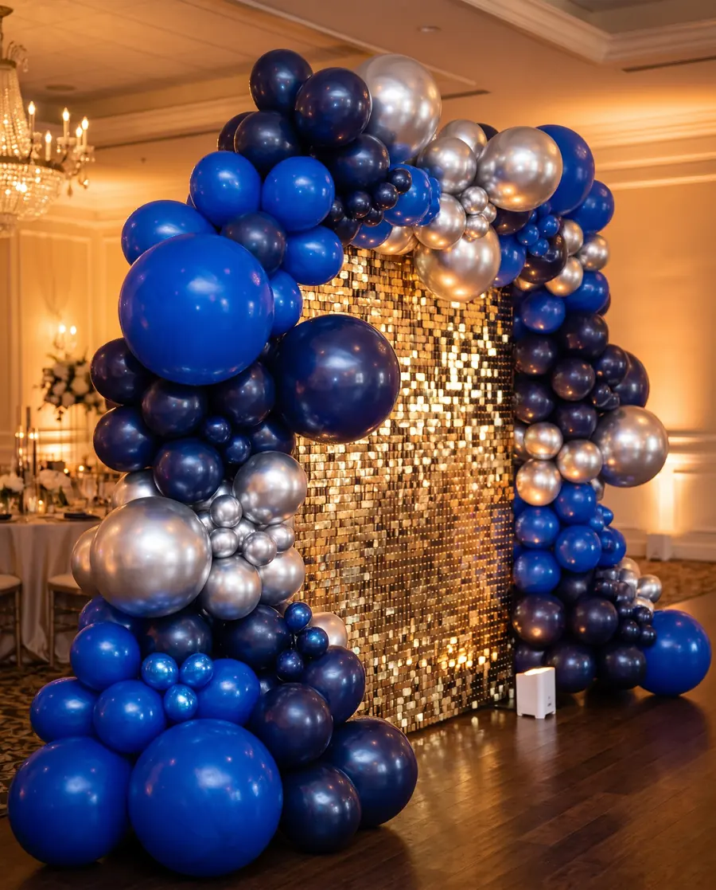
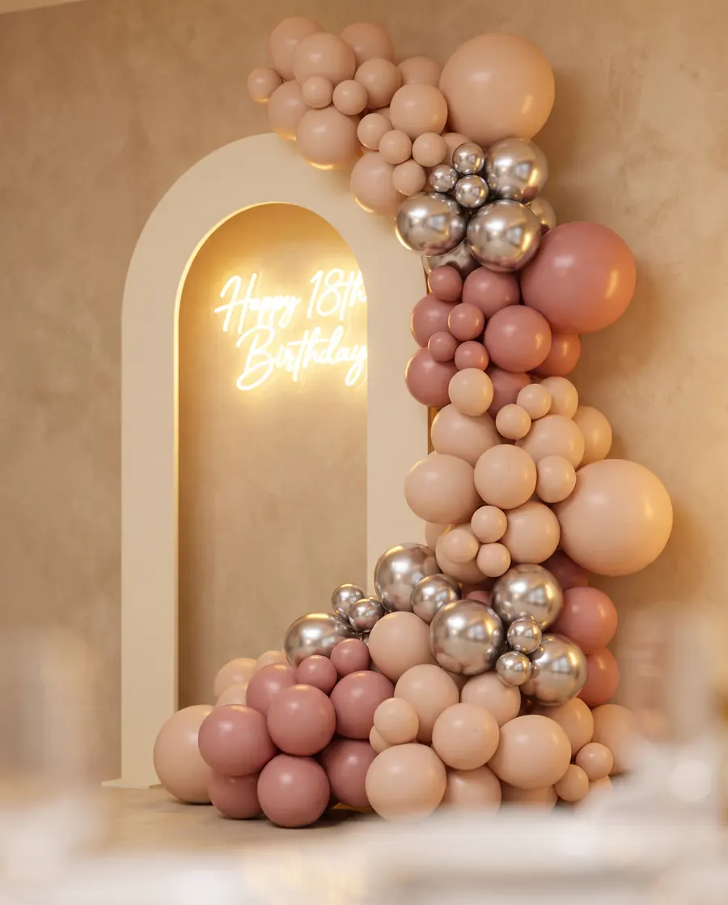
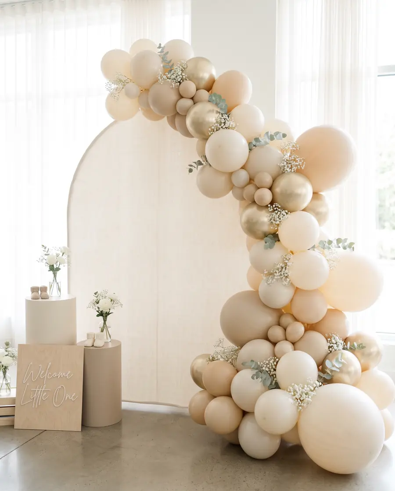
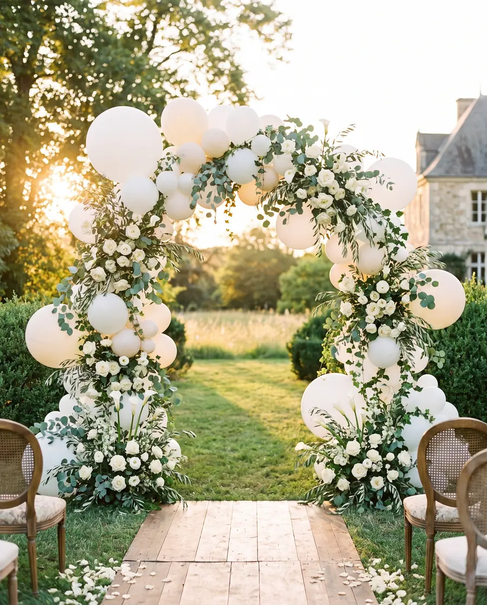
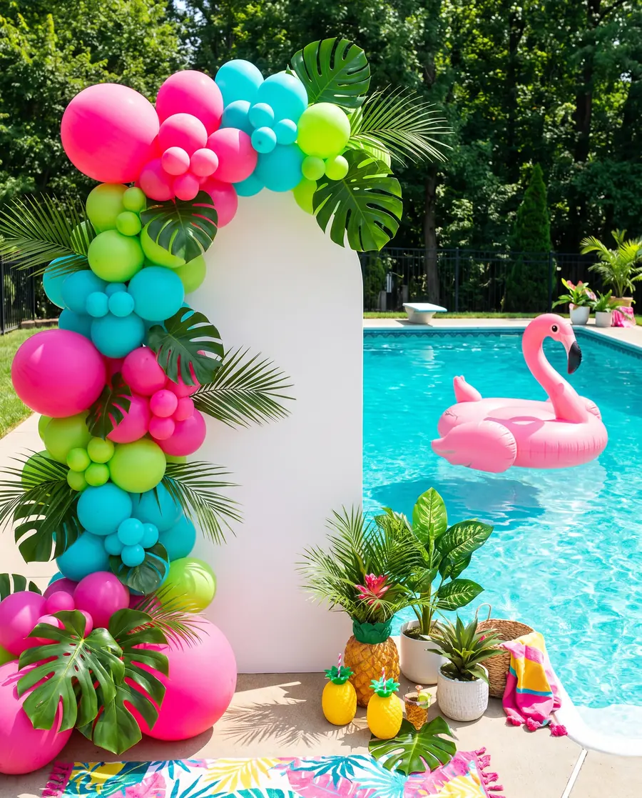
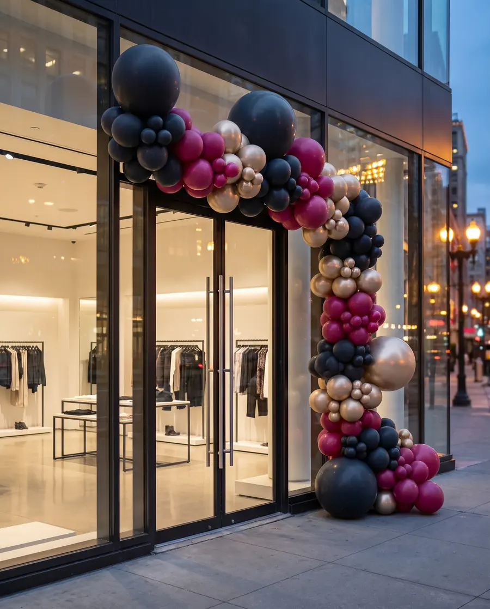

Compleanni
Dall'arco sul tavolo della torta all'allestimento che prende tutta la parete. Con numero luminoso, se il numero conta.
Sant'Ilario d'Enza · Reggio Emilia · Parma
La festa si ricorda per com'era quando sei entrato. Archi, pareti scintillanti, lettere luminose e fiori — montati da noi, dove serve a te.
Occasioni
Dall'arco sul tavolo della torta all'allestimento che prende tutta la parete. Con numero luminoso, se il numero conta.
La festa più fotografata di tutte. Parete scintillante, insegna al neon, numero luminoso alto un metro: fatta per stare dentro un ritratto.
Toni delicati, nome del bambino ritagliato su misura, composizioni basse che non coprono i tavoli. Anche per baby shower e primo compleanno.
Bouquet, centrotavola, arco della cerimonia e tableau. La parte floreale e quella dei palloncini pensate insieme, non sommate.
Tropicale, Stranger Things, supereroi, unicorni. Il tema lo scegliete voi; noi lo teniamo elegante anche quando è scatenato.
Inaugurazioni, anniversari, vetrine e stand. Allestimenti nei colori del vostro marchio, montati fuori orario di apertura.






Cosa portiamo
Non è una lista da ordinare a pezzi: si sceglie insieme cosa serve davvero per quello spazio e per quel numero di invitati.
Organici o a colonna, dal metro all'allestimento che gira intorno a una porta. Palloncini opachi, cromati e trasparenti nello stesso disegno.
Parete a paillettes, pannelli ad arco tinta unita, fondali su misura. È lo sfondo di tutte le foto della serata: si sceglie per primo.
Alti circa un metro, a lampadine. Il numero degli anni, le iniziali, la parola che conta. A noleggio per la giornata.
«Happy Birthday» e frasi personalizzate. Accese fanno da luce d'ambiente quando cala il sole.
Il nome ritagliato e applicato sul fondale, nel carattere che scegliete. Resta come ricordo dopo la festa.
Freschi o stabilizzati, coordinati con i colori dell'allestimento. Compreso il bouquet della sposa e le composizioni per i tavoli.
Sciolti, in mazzi o con il peso al tavolo. Anche solo questi, se la festa è in casa e serve poco.
Lavori
Le immagini di questa pagina sono di esempio, generate per far vedere come funziona il sito. Vanno sostituite con le fotografie vere dei suoi allestimenti.
Chi sono
Vero Bouquet è il mio laboratorio a Sant'Ilario d'Enza. Non c'è un'agenzia dietro: ci sono io, che disegno l'allestimento, lo preparo e vengo a montarlo. Per questo posso dire di sì a una festa in casa da trenta persone e a un diciottesimo in sala da duecento.
Lavoro su Sant'Ilario d'Enza, Reggio Emilia, Parma e i comuni intorno.
Dicono di noi
Qui va una recensione vera.
Nome del cliente · tipo di festa
Qui va una recensione vera.
Nome del cliente · tipo di festa
Qui va una recensione vera.
Nome del cliente · tipo di festa
Servono tre recensioni reali — vanno bene quelle già ricevute su Facebook o via messaggio, con il permesso di chi le ha scritte. È la sezione che convince di più e non si può inventare.
Preventivo
Rispondiamo con una proposta e un prezzo. Se la data è ancora libera, ve lo diciamo subito.